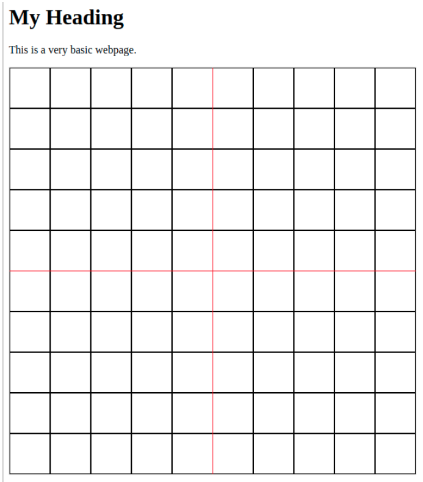

Lab 1: 2D Graphics with HTML Canvas
This lab consists of three exercises on drawing with the HTML canvas 2D graphics API. It requires some knowledge of JavaScript, which was covered briefly in Section A.3.
You will find the neccessary files on moodle for you to download. You can edit these files with any text editor like NotePad or VSCode.
Turning in your work: You will find on moodle submission links, one for each of the following tasks. You only need to submit the ".html" file. The files must have their original names, Lab1Ex1.html , Lab1Ex2.html and Lab1Ex3.html.
HTML
This lab is to help you get acquainted with the HTML canvas and how to draw on it. We will be using this canvas for all of the labs in 2D graphics before we move to 3D graphics with OpenGL later on in C. The canvas provides an API for custom rendering using JavaScript. This canvas is then embedded inside the Document Object Model (DOM) of an HTML web page.
A typical HTML page consists of various tags structured in a hierarchical way. Tags are indicated by angle brackets and tags must have an opening (<MyTag>) and closing (</MyTag>) element. The opening tag contains the type of the tag and the closing element contains a forward slash followed by the tag type again.
The HTML language is a declarative language, which is different to what you have seen so far. HTML code simply describes the content of a web page, you have no control over the flow of execution as you would in an imperative programming language. In HTML, we describe the content of the page that the browser will display. We then use other technologies, like Cascading Style Sheets (CSS) to describe the look/style of the page. Using a programming language like JavaScript (JS), we can perform logic, fetch data asynchronously, and update both the content (HTML) and style (CSS) of the page. Websites typically use all of these technologies together to display dynamic, interactive and visually appealing pages.
As this is not a web development course, we will not focus on the specifics of HTML/CSS/JavaScript but will use JavaScript to paint/draw on an HTML Canvas element. In the example in Listing 1 on the following page, we see an HTML page with “Page Title” as the title that will be shown in the browser window. “My Heading” will be displayed in the default font for an h1 heading (<h1></h1>) and there is a paragraph of text (<p></p>). We also have a canvas element which we can draw on later. We set the id, width, height, and style properties of the element inside the opening tag. Inside the tag, we also place text that should be shown if the browser does not support the HTML5 canvas. Using the example below, create lab1.html in a text editor. Save the file and then open it in a browser.
<html>
<head>
<title>Page Title</title>
</head>
<body>
<h1>My Heading</h1>
<p>This is a very basic webpage.</p>
<canvas id="myCanvas" width="600" height="600"
style="border:1px solid #d3d3d3;">
Your browser does not support the HTML5 canvas tag.
</canvas>
</body>
</html>
Making Things Dynamic
As it stands, our webpage is a static page and will always display the same thing. Usually, websites can make their pages dynamic in two different ways – server-side or client-side programming languages. Server-side languages (e.g. PHP, Python, ASPX, C#, JavaScript2 etc.) run on the webserver and are used to generate the HTML/CSS content that gets sent to the web browser. Client-side languages (e.g. JavaScript, VBScript, WebASM) are sent from the server to the browser in text/bytecode and then run locally in the browser which acts as an interpreter. JavaScript is the most popular language used in the browser and the Chrome V8 JavaScript engine is a particularly fast JavaScript runtime bundled in many browsers. In the code below in the "Drawing Section" we have updated the page to include two script sections. One after the body and one in the head. The script sections will be parsed and run as they are encountered by the browser. It is important to note that the rest of the webpage might not have been loaded yet, as the browser loads resources at different times. In the code, we display an alert that is triggered as the browser encounters it. We declare a function called init. We then update the body tag, telling it to call our init function as soon as the page is loaded and ready. Update your lab1.html file and refresh the page in the browser.
Drawing
In this section, we will do some very basic drawings. At this stage, we will manage the process manually, but later on, we’ll see that geometric transformations and hierarchical modelling make this process significantly easier.
<html>
<head>
<title>Page Title</title>
<script>
function init(){
// This will run when the page as fully loaded and the
// body's onload event is triggered.
alert("Init Function");
}
</script>
</head>
<body onload="init()">
<h1>My Heading</h1>
<p>This is a very basic webpage.</p>
<canvas id="myCanvas" width="600" height="600"
style="border:1px solid #d3d3d3;">
Your browser does not support the HTML5 canvas tag.
</canvas>
</body>
<script>
// This will run as the browser's interpreter reaches the line.
alert("Hello World!");
</script>
</html>
The HTML5 canvas provides a context object that we can use to draw to draw on the canvas. At
this stage, we will be using the 2D context, but later on, in the course, we will do 3D rendering with
WebGL. In line 1 below we use JavaScript to get a reference to the myCanvas object that was defined in our
HTML. In line 2 we get the 2D context from the canvas, which gives us an API to stroke/fill points,
lines, paths, arcs, polygons etc.
var c = document.getElementById("myCanvas");
var g = c.getContext("2d");
We will put this in the script tag before the init function.
Now that we have a reference to the graphics context we can use its member functions to render to
the canvas.
We distinguish between stroking and filling.
- Stroking - we run a virtual pen along a path.
- Filling - we paint the inside of a path to colour in a polygon.
// Sets the strokeStyle to black
g.strokeStyle = "rgb(0,0,0)";
// Sets the fillStyle to red
g.fillStyle = "#ff0000";
To create a path we have a few functions:
g.beginPath()- must be called to create a new path at the beginning of each new path.g.moveTo(x,y)- move the path cursor to (x, y).g.lineTo(x,y)- make a line from the previous point on the path to (x,y).g.closePath()- make a line from the previous point on the path to the first point in the path.
g.stroke()- use the strokeStyle to draw a line over the path.g.fill()- use the fillStyle to colour the inside of the path.
We can use the functions above to update our code as shown below and draw a line on the canvas.
<html>
<head>
<title>Page Title</title>
<script>
var canvas;
var graphics;
function line(x1, y1, x2, y2){
graphics.beginPath();
graphics.moveTo(x1, y1);
graphics.lineTo(x2, y2);
graphics.stroke();
}
function init(){
canvas = document.getElementById("myCanvas");
graphics = canvas.getContext("2d");
line(0,0,300,300);
}
</script>
</head>
<body onload="init()">
<h1>My Heading</h1>
<p>This is a very basic webpage.</p>
<canvas id="myCanvas" width="600" height="600"
style="border:1px solid #d3d3d3;">
Your browser does not support the HTML5 canvas tag.
</canvas>
</body>
</html>
Exercise 1: Creating a Clock
Adapt the code shown above to complete the tasks in this section. We are going to build a clock face:- What is the width and height of the canvas?
- Based on the line drawn by the code, where is the origin of the canvas and what are the coordinates of the areas marked below?
- Based on the code above, create a function that draws axes as shown below.
- Knowing that you can parameterise a circle with radius, r, and centre, c, as follows, create a function that draws a circle of radius 240 centered in the middle of the canvas. Draw the circle by generating points by sweeping over different values of θ ∈ [0, 2π] and creating a path from p(θi) to p(θi+1). Close and then stroke the path. See how the circle becomes smoother as you increase the number of points.
- We need lines to represent the ‘tics’ for the hours and minutes of our clock. Create a function that adds these lines in. Hint: You want to draw a line between points with a different r but the same θ.
- Using a JavaScript date object, change the text on screen to show the current datetime.
- Create the hour, minute and second hands. You need to create a function that converts the current time into a θ value for each hand before drawing each of the three lines.
- Use the setInterval function to call your init function every second – setInterval(init,
1000). This function should redraw your clock with the current time. Do you notice anything
strange?
- If you set did not set the colour back to black after drawing the second-hand you’ll notice that this causes a strange side effect.
- Because we are just drawing every second, the old content of the canvas is still visible. We need to clear the canvas each time we draw so that we have a fresh start for each render of the clock.
- Correct the issues above. Make sure that you reset the colour after drawing the second-hand in red. Before drawing the clock each time, you should wipe the canvas by calling:
- Finally, see if you can adjust your code so that the hands all move smoothly around the clock (i.e. the hour hand can be at 3.3) and the second hand is updated every 10ms. Also, remove the axes/guidelines that we added earlier to help us design the clock.
- At this stage you are ready to submit Exercise 1, to get marks for innovation look to use your creativity and add in some additional cool element. This just needs to be something novel to this lab, like animation or colouring or any additional feature like including dates, do not be limited by these suggestions have fun

let d = new Date();
document.getElementById("some\_id").innerHTML = d;
graphics.clearRect(0, 0, canvas.width, canvas.height);

Exercise 2: Shapes
For the second part of the lab you will work with Lab1Ex2.html, you should add new drawing code to the draw() function in Lab2Ex2.html to draw the following picture, including the dividing lines:

The heart can be drawn as a path made up of two Bezier curves. I suggest that you try making a heart in the Bezier curve demo from Section 2.2 to get some idea of where the control points need to be placed. It will take some experimentation to get the shape right!
The size of the canvas is 600-by-600. You can use the standard pixel coordinates, or you can apply a transformation to use a more convenient coordinate system. If you do the later, remember that line width is also transformed, and you will probably find it convenient to set the line width as a multiple of the global variable pixelSize. You also have the option of drawing the objects directly in world coordinates or using modeling transformations. In fact, I mostly just used plain pixel coordinates when I drew the picture.
The 2D graphics context in the program is named graphics. It has all the properties discussed in Section 2.6 of the textbook. In addition, the following non-standard drawing commands have been added to the graphics context:
graphics.strokeLine(x1,y1,x2,y2)— draw the line segment from (x1,y1) to (x2,y2).graphics.strokeCircle(x,y,r)— stroke the circle with center (x,y) and radius r.graphics.strokeOval(x,y,rx,ry)— stroke the oval with center (x,y), horizontal radius rx, and vertical radius ry.graphics.strokePoly(x1,y1,x2,y2,x3,y3,...)— stroke the polygon with vertices (x1,y1), (x2,y2), (x3,y3), ...graphics.fillCircle(x,y,r)— fill the circle with center (x,y) and radiusgraphics.fillOval(x,y,rx,ry)— fill the oval with center (x,y), horizontal radius rx, and vertical radius ry.graphics.fillPoly(x1,y1,x2,y2,x3,y3,...)— fill the polygon with vertices (x1,y1), (x2,y2), (x3,y3), ...
Exercise 3: Mousing
For the third exercise, you will work with Lab1Ex3.html, a program that implements mouse interaction. As it stands, the program draws a sequence of squares as the user drags the mouse on the canvas. You will add several additional drawing tools that respond to a mouse drag in different ways.
A drag action consists of a mouse down event, a sequence of mouse move events, and a mouse up event. The program defines functions to respond to these events. To implement the new tools, you will work mostly in the function doMouseMove(), which responds to mouse move events. You might also need to add something to doMouseDown(). Aside from implementing the tools, there are a few more things that have to be added to the program.
First, you should add a "Clear" button to the program. When the user clicks the button, the canvas should be filled with white. To do that, you need to add the HTML code for the button itself to the <body> of the web page. That takes the form
<button id="clearButton">Clear</button>
And you need to set up an event handler to respond to click events on the button. To do that, define a JavaScript function to clear the canvas. Then, as part of initialization, install it as the event handler using a command of the form
document.getElementById("clearButton").onclick = doClear;
where doClear is the name of the function.
Second, add at least one new color to the <select> element that creates the Color popup menu. Implement the new color by adding code to the doMouseMove function.
Third, add a new <select> element that will let the user select the drawing tool that they want to use, and implement that menu by adding code to the mouse-handling functions. This is the major part of the exercise. You should add at least four new tools. They must include:
- A tool similar to the original squares tool, except that it draws a non-trivial shape such as a star or a heart. (Non-trivial means that you need to create it as a path or polygon. In particular, not just circles or ovals.)
- A Curve tool that simply draws a line segment from the previous mouse position to the current mouse position. Note that the variables prevX and prevY are already defined to represent the previous mouse position.
- A tool that uses the starting position of the mouse, which is given by the variables startX and startY, as well as the current position. For example, draw a circle with center at the starting point and passing through the current position.
- One additional tool of your choice. (You might consider an "erase" tool that simply draws in white.)
Here, for example, is a drawing made with my completed version of the program, showing examples of four tools: